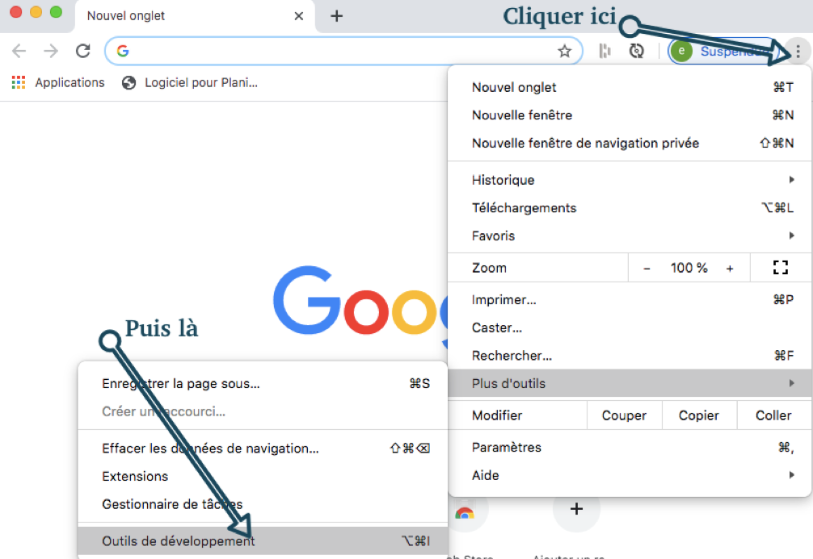
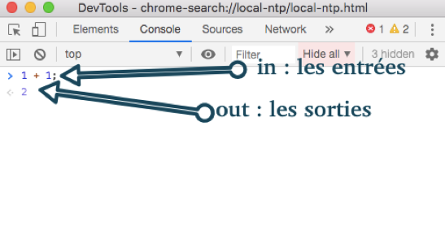

Ce cours présente les concepts de base de JavaScript en les comparant avec Python, que vous connaissez déjà. JavaScript est le langage de programmation du web : il permet de rendre les pages interactives.
Principales différences avec Python :
JavaScript s’exécute dans le navigateur (côté client)
La syntaxe utilise des accolades {} au lieu de l’indentation
Il existe plusieurs façons de déclarer des variables
JavaScript manipule directement les éléments HTML (le DOM)
Présentation de la console javascript
Javascript est une implémentation dans le navigateur du langage Ecmascript.
Javascript est un langage interprété … par le navigateur, donc côté client.
Pour le vérifier, on peut utiliser la console javascript du navigateur pour tester quelques instructions, et interagir avec la page web en cours.
Sur Chrome, cette console se trouve en ouvrant les outils de développement :

la console javascript dans le navigateur Chrome
Choisir alors l’onglet : Console et commencer à taper les instructions, une à une, après l’invite >, comme sur l’image suivante :

entrée / sortie
Pour afficher le résultat d’une opération dans la console (équivalent au print en python), on utilise l’instruction console.log(operation).
L’option filter de la console devra être sur Default
Les Variables : let, const et var
En Python (rappel)
En Python, on déclare une variable simplement :
# Une variable simpleage=15nom="Alice"# On peut la modifierage=16
En JavaScript : trois mots-clés
JavaScript propose trois façons de déclarer une variable :
letage=15;// Variable qui PEUT changer
constnom="Alice";// Constante qui NE PEUT PAS changer
varancien=10;// Ancienne syntaxe (à éviter)
Le typage est dynamique, comme en python: il n’est pas besoin de préciser le type.
Règle d’utilisation
Mot-clé
Usage
Peut changer ?
Recommandation
const
Valeur fixe
[X] Non
À utiliser par défaut
let
Valeur variable
[V] Oui
Quand la valeur change
var
Ancienne syntaxe
[V] Oui
À éviter (obsolète)
Exemples concrets
// Utiliser const par défaut
constpi=3.14159;// Ne changera jamais
constnom="Alice";// Ne changera jamais
constbouton=document.getElementById('monBouton');// Ne changera jamais
// Utiliser let quand ça change
letcompteur=0;// Va augmenter
lettemperature=20;// Peut varier
letscore=0;// Va évoluer
// Erreur : on ne peut pas modifier une const
constage=15;age=16;// ERREUR : Assignment to constant variable
// Correct : on peut modifier un let
letage=15;age=16;// OK
Remarque : A moins que vous soyez sûr que la valeur puisse être modifiée, déclarez vos variables avec const, puis changez en let seulement si le compilateur vous indique une erreur.
Quelques différences Python ↔ JavaScript
Python
JavaScript
age = 15
let age = 15;
PI = 3.14 (convention)
const PI = 3.14; (imposé)
Pas de point-virgule
Point-virgule ; recommandé
print(age)
console.log(age)
Le DOM : Document Object Model
Qu’est-ce que le DOM ?
Le DOM est la représentation en mémoire de votre page HTML. JavaScript peut :
Lire les éléments HTML
Les modifier
Créer de nouveaux éléments
Réagir aux actions de l’utilisateur
Analogie avec Python :
# En Python, vous manipulez des fichiersfichier=open('data.txt','r')contenu=fichier.read()fichier.close()# En JavaScript, vous manipulez des éléments HTMLelement=document.getElementById('monId')contenu=element.textContent
Récupérer un élément : getElementById()
HTML de départ
Placer un attribut id aux balises que l’on veut indexer.
<h1id="titre">Bienvenue</h1><pid="description">Ceci est un paragraphe</p><buttonid="monBouton">Cliquez-moi</button>
JavaScript
<script>// Récupérer les éléments
consttitre=document.getElementById('titre');constdescription=document.getElementById('description');constbouton=document.getElementById('monBouton');console.log(titre);// Affiche: <h1 id="titre">Bienvenue</h1>
</script>
A faire vous-même (1): Placer les 2 parties du script ci-dessus dans une même page (page.html). Ouvrir avec un navigateur.
Remarque importante : L’ID doit être exactement le même (sensible à la casse)
// Correct
constelement=document.getElementById('monBouton');console.log(element);// Affiche <button id="monBouton">Cliquez-moi</button>
// Erreur : mauvaise casse, ou ID inexistant
constelement=document.getElementById('MonBouton');console.log(element);// Affiche: null
Attributs vs Propriétés
Comprendre la différence
Un élément HTML possède :
Des attributs (définis dans le HTML)
Des propriétés (accessibles en JavaScript)
Exemple HTML
<inputtype="text"id="champNom"value="Alice">
Les attributs (dans le HTML)
type="text"
id="champNom"
value="Alice"
Les propriétés (en JavaScript)
constchamp=document.getElementById('champNom');// Propriétés disponibles :
champ.type// "text"
champ.id// "champNom"
champ.value// "Alice" (peut être modifié par l'utilisateur)
champ.textContent// ""
champ.style// Objet avec toutes les propriétés CSS
La notation pointée
En JavaScript, on accède aux propriétés avec un point (comme en Python) :
# Python: notation pointée pour objet.attribut ou objet.methode()foreventinpygame.event.get():ifevent.type==pygame.QUIT:running=False
// JavaScript : notation pointée pour les éléments HTML
constelement=document.getElementById('titre');// Lire une propriété
console.log(element.textContent);// "Bienvenue"
console.log(element.id);// "titre"
// Modifier une propriété
element.textContent="Nouveau titre";element.style.color="red";
Propriétés courantes
textContent : Le texte à l’intérieur
<pid="message">Bonjour tout le monde</p>
A faire vous-même (2): Placer dans votre page.html le paragraphe Bonjour tout le monde. Ouvrir la console Web et placer l’une après l’autre chacune des instructions javascript ci-dessous.
constmessage=document.getElementById('message');// Lire le texte
console.log(message.textContent);// "Bonjour tout le monde"
// Modifier le texte
message.textContent="Nouveau message";// Le HTML devient : <p id="message">Nouveau message</p>
// JavaScript
functionafficherMessage(){console.log("Message affiché");}// Ou avec fonction fléchée
constafficherMessage=()=>{console.log("Message affiché");};
// Récupération des éléments
constbouton=document.getElementById('bouton');constaffichage=document.getElementById('affichage');// Variable compteur
letcompteur=0;// Fonction d'incrémentation
functionincrementer(){compteur++;affichage.textContent=compteur;}// Associer la fonction au clic
bouton.addEventListener('click',incrementer);
let compteur = 0 : Variable qui va changer (on utilise let)
function incrementer() : Déclare la fonction
compteur++ : Ajoute 1 au compteur (équivalent à compteur += 1)
affichage.textContent = compteur : Met à jour le texte affiché
addEventListener('click', incrementer) : “Quand on clique, exécute la fonction”
Exercices d’application
Exercice 1 : Variables
Complétez le code suivant :
// 1. Déclarez une constante PI valant 3.14159
// 2. Déclarez une variable score initialisée à 0
// 3. Augmentez le score de 10
// 4. Affichez le score dans la console
// BONNE PRATIQUE : const pour les références
constbouton=document.getElementById('btn');constaffichage=document.getElementById('resultat');// Ces éléments ne changeront jamais, même si leur contenu change
bouton.textContent="Nouveau texte";// OK !
affichage.textContent="Score: 10";// OK !
// On ne peut pas réassigner à un autre élément
bouton=document.getElementById('autre');// ERREUR